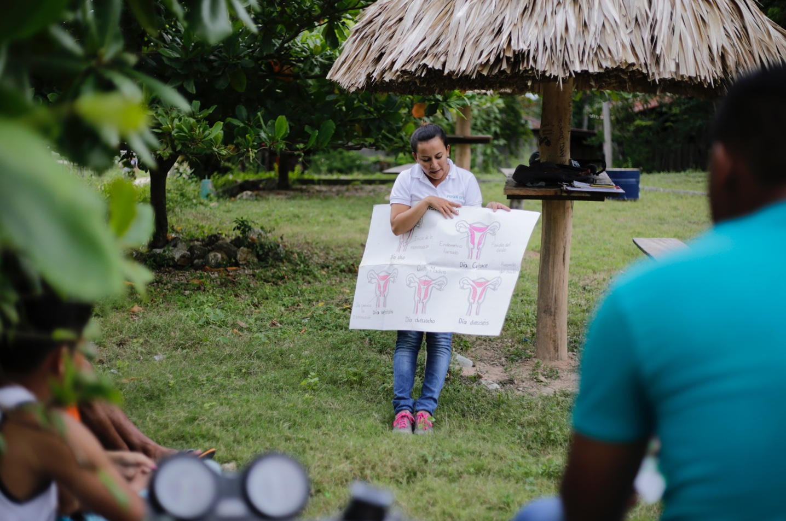
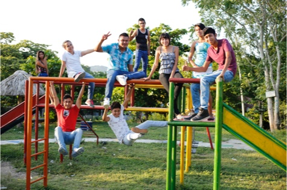
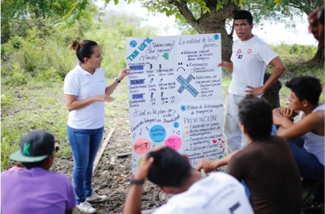
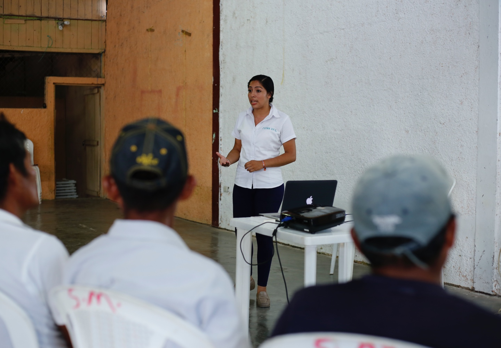
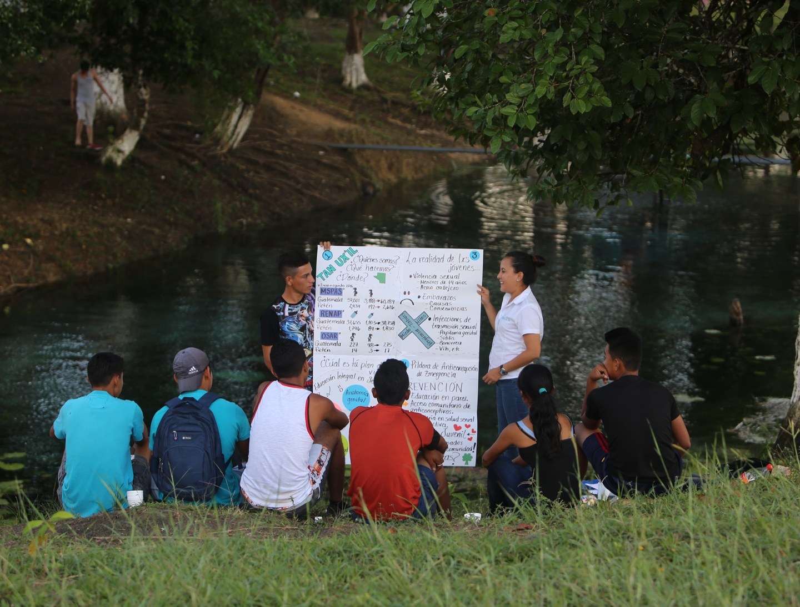
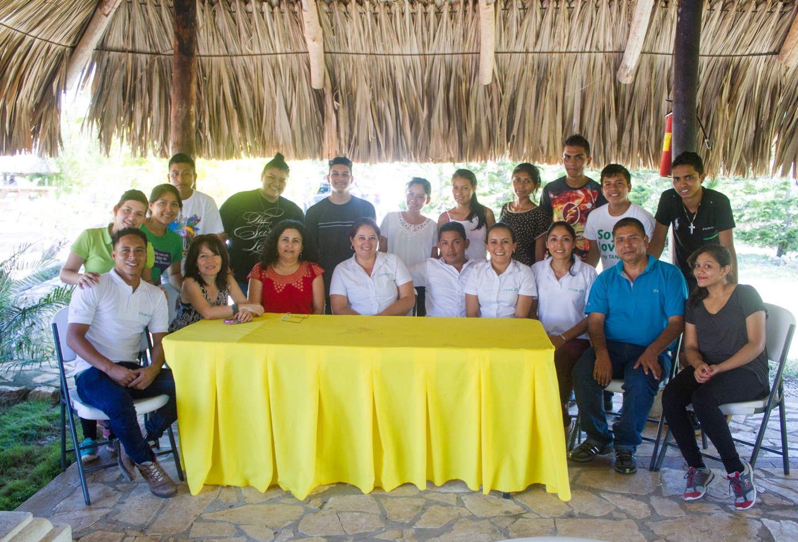
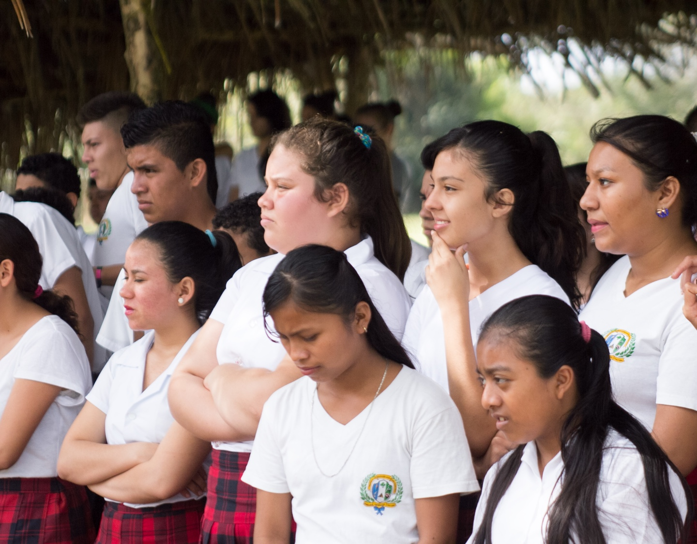

Salud y Liderazgo

El programa de salud y liderazgo está conformado por la red de promotores juveniles. Trabajamos en las comunidades rurales y urbanas de Petén en la formación de liderazgos en salud sexual y reproductiva.
Consejeria en Pares

Los promotores trabajan por la prevensión de embarazos en niñas y adolecentes a travez de la consejería en pares con el enfoque de Educación Integral en Sexualidad -EIS-
Creando vinculos con Centros de Salud, Lideres Comunitarios, Escuelas y Comadronas.
Proyección Social
Realizamos capacitaciones constantes con organizaaciones nacionales e internacionales en marcos legales y avances cientificos en educación sexual y reproductiva y hacemos incidencia política a nivel local y nacional.
También realizamos gestión e implementación de proyectos comunitarios enfocados en el tema de ambiente y participación ciudadana.

Educación

Nuestros procesos de formación estan diseñados con el enfoque de educación popular, nuestra metodología se basa en juegos de analisis y reflexión para el cambio de comportamiento.
Talleres Comutarios

Captamos y capacitamos a jovenes líderes en educación integral en sexualidad -EIS- quienes replican la información son sus pares.
Capacitación

Proceso de formación que recibe la red de promotores en tema de salud sexual y reproductiva, violencia sexual, liderazgo, incidencia política y marco legal.
-ITR-

Estrategia innovadora a un centro educativo incluyendo estudiantes y docentes en tema de prevención de embarazos en niñas y adolecentes, violencia sexual, violencia en el noviazgo, infecciones de transimisión y prácticas saludables.
Campamento Juvenil

El Campamento Institucional es una experiencia vivencial con metodología lúdica y educación popular para la sensibilización y fortalecimiento de liderazgo de la red de promotores juveniles voluntarios de Asociación Tan Ux’il, como incentivo de un año de voluntariado en sus comunidades.
Radio

Es un programa de radio dirigido y producido por jovenes lideres en salud sexual y repdoductiva, a travez de un formato de educación y entretenimiento.
Escuchanos los martes y viernes de 9:00 a 10:00 AM radio Guacamaya